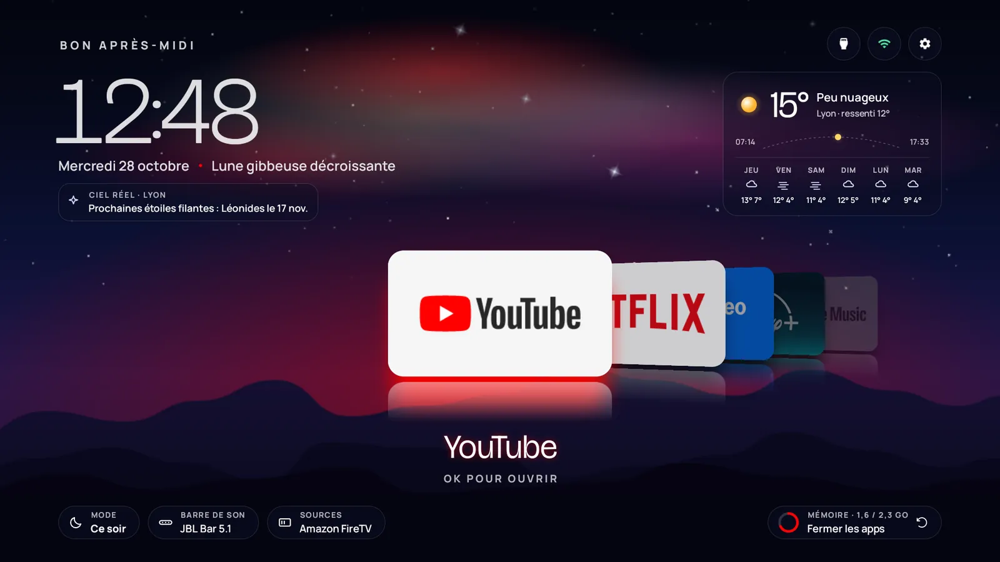
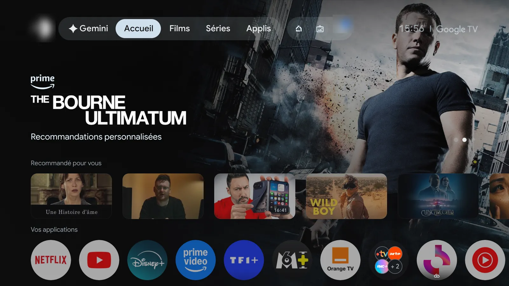
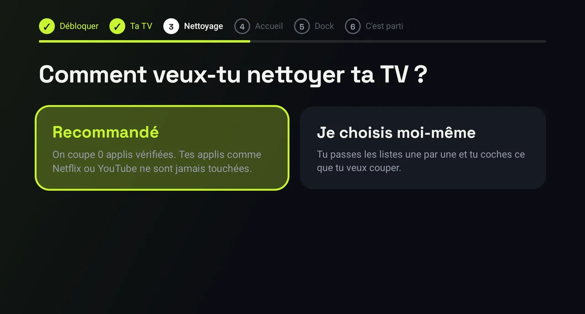
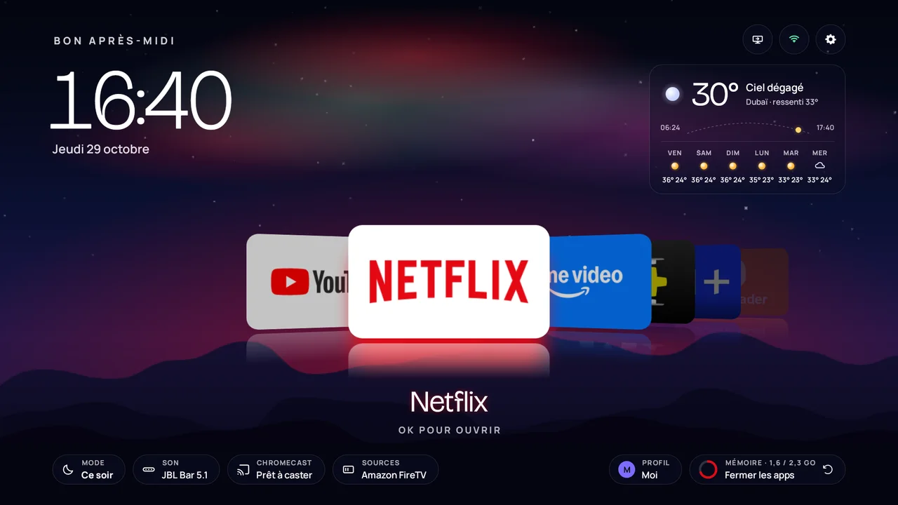
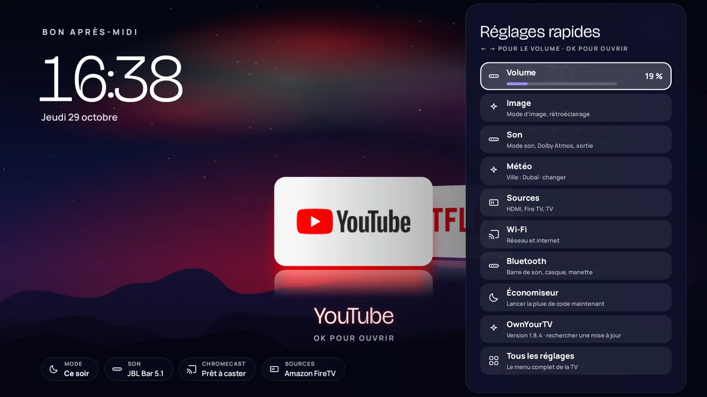
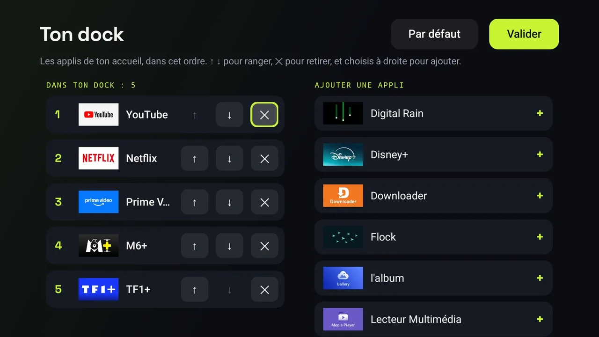

You paid for it. Own it.
Switch off the ads and tracking your Android TV or Google TV came with, and give it a home screen that is yours. From the remote, no computer needed.
- No computer
- No phone
- No AI
- Just the remote


Try it here
The home screen, live
Move through the dock like with the remote: arrow keys, a swipe, or a click. The aurora takes the colour of the app you land on.
A web replica, for trying. On the TV it runs on the remote.
How it works
Three steps, all from the remote
About ten minutes. Nothing is deleted: apps are switched off, and one button switches them back on.
-
Turn on developer mode
Settings › System › About: click Android TV OS build 7 times. Then Settings › System › Developer options: turn on USB debugging.
-
Install with Downloader
Install the free Downloader app from your TV's Play Store, type the code 8225348, then install OwnYourTV.
-
Follow the assistant
Accept the debugging prompt once. The assistant recognises your TV, offers the recommended clean-up, the new home screen and your dock. Then one press: done.
What it switches off
Everything you never asked for
- AdsPromos, sponsored rows and store demos the maker put on your TV.
- TrackingTelemetry, advertising IDs and usage reports.
- ClutterLeftovers nobody uses on a TV.
- Never your appsNetflix, YouTube, Prime Video and the rest are never touched. What the TV needs to start, play a channel or an HDMI input is never offered.

A home screen of its own
A living night sky, your apps up front
- An aurora in your app's colourPick Netflix and the sky turns red. Shooting stars on real meteor-shower nights.
- Your dock, your orderChoose the apps on the home screen during the assistant, change them any time.
- Quick settings on the gear keyVolume, picture, sound, sources, Wi-Fi and Bluetooth without leaving the home screen.



Safe by design
Built so your TV never gets stuck
A TV is not a phone you can wipe on a whim. OwnYourTV plans for the bad days.
Switched off, never deleted
Every app stays on the TV. Only apps checked on a real set are ticked, and what the TV needs is never offered.
After a TV update
Updates often switch the ads back on. OwnYourTV notices at boot and on its home screen, and switches them off again in one press.
A backup home
If the new home screen ever fails to start, a plain home with all your apps takes over. Never a black screen.
One button puts it all back
"Put everything back" switches every app on again and brings your original home screen back.
Which TVs
Android TV and Google TV, model by model
OwnYourTV recognises hundreds of models from TCL, Sony, Xiaomi, Philips, Hisense and more, from lists tested on real sets. It changes the home screen the way each model needs, or leaves it alone when a model cannot safely take another one. Below, the TVs OwnYourTV owners shared from the app.
Questions
Before you start
Is it safe for my TV?
Apps are switched off, never deleted, and only apps that were checked on a real TV are ticked. On a recognised model, OwnYourTV keeps what that model needs. If its home screen ever fails to start, a backup home with your apps takes over. "Put everything back" in the app turns every switched-off app back on and brings your original home screen back.
A TV update brought the ads back
It happens: makers switch their apps back on during updates. OwnYourTV notices it at the next start and offers to switch them off again in one press. Turn USB debugging on when it asks, then off again at the end.
Google Play Protect says the app is blocked
Play Protect warns about every app installed outside the Play Store. Choose "More details", then "Install anyway". OwnYourTV is open source: anyone can read what it does on GitHub.
The app asks me to reconnect the Wi-Fi
On some Google TV sets (Xiaomi, among others), the Wi-Fi network is saved by the TV's first-setup app. Changing the home screen switches that app off, which would forget the network. The assistant guides you: forget the network, join it again, and the home screen can change without cutting the Internet.
My TV does not want another home screen
Some models only accept their own home screen. OwnYourTV knows them and says so: the ads and tracking are still switched off, and your current home stays.
Can I do it from a computer?
Yes: ownyourtv.py does the same from Windows, macOS or Linux, with adb. See From a computer on GitHub.
Does OwnYourTV collect data?
No. Everything happens on the TV. At the end, the app offers to share which TV it ran on and what worked, anonymously, only if you press Share. Details in the privacy page.
How much does it cost?
Nothing. OwnYourTV is free and open source, under the MIT licence.